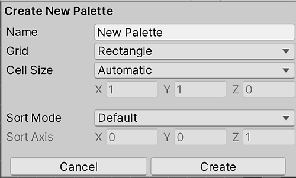
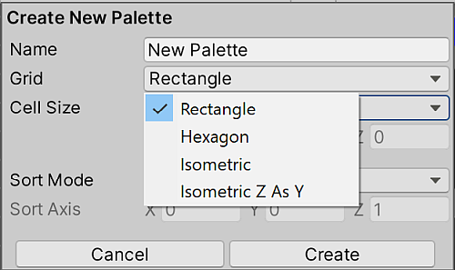
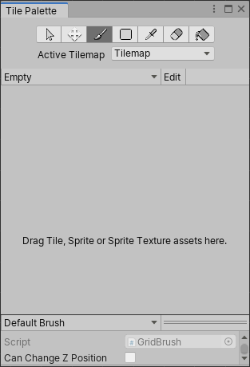
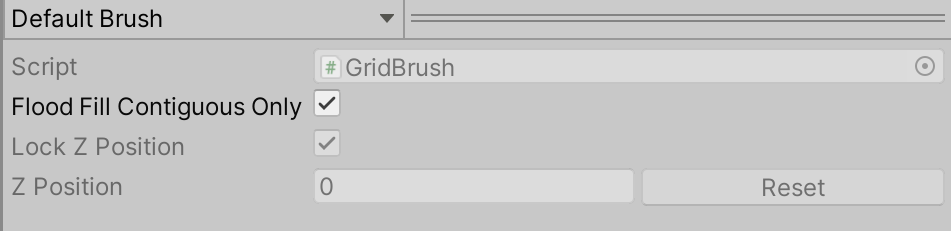

Creating a Tile Palette
将选择的一组瓦片放在瓦片面板上，这样您就可以从面板中选择瓦片以在瓦片地图上进行绘制。要创建一个瓦片面板，转到 Window > 2D > Tile Palette，打开 Tile Palette 窗口。如果看不到此选项，则表示可能未安装 2D Tilemap Editor 包。如果确实如此，请通过 Package Manager 下载 2D Tilemap Editor 包。
默认情况下，Tile Palette 窗口是空的。选择 New Palette 下拉选单以打开项目中可用的瓦片面板列表，或用于创建新面板的选项。选择 Create New Palette 选项创建新的面板。

从下拉选单选择 Create New Palette 选项。
选择创建新瓦片面板的选项后，** Create New Palette** 对话框变为可用。它包含创建新面板时可用的不同属性设置和选项：

Create New Palette 的选项。

将 Grid 选项展开。
Create New Palette 属性
| 属性 | 功能 |
|---|---|
| 名称 | 为创建的瓦片面板资源提供一个名称。 |
| Grid | 选择要将创建的瓦片面板绘制到的网格布局。 |
| Rectangle | 如果要为默认矩形瓦片地图创建面板，请选择此选项。 |
| Hexagon | 如果要为六边形瓦片地图 (Hexagonal Tilemap) 创建面板，请选择此选项。 |
| Isometric | 如果要为等距瓦片地图 (Isometric Tilemap) 创建面板，请选择此选项。请参阅创建用于等距瓦片地图的瓦片面板以了解更多信息。 |
| Isometric Z as Y | 如果要为 Isometric Z as Y Tilemap 创建面板，请选择此选项。请参阅创建用于等距瓦片地图的瓦片面板以了解更多信息。 |
| * Hexagon Type（仅当 Grid 类型设置为 Hexagon 时可用） | 选择要将瓦片面板绘制到的六边形瓦片地图的类型。请参阅有关六边形瓦片地图的文档以了解更多信息。 |
| Cell Size | 要将瓦片绘制到的单元格的大小。 |
| Automatic | Cell Size 以 Unity 单位自动设置，并基于用于创建瓦片资源的精灵的大小。如果有多个瓦片，则会调整 Cell Size 以匹配面板左下角的第一个瓦片，使其完全适合单元格。 |
| Manual | 选择此选项可输入自定义大小值。 |
| Sort Mode | 确定瓦片面板中的渲染器的透明度排序模式。 |
| Default | 默认透明度排序模式。此模式由项目的图形设置决定。 |
| Orthographic | 选择此模式可根据从摄像机到瓦片面板中渲染器的垂直距离对渲染器进行排序。 |
| Perspective | 选择此模式可根据从摄像机到瓦片面板中渲染器的直接距离对渲染器进行排序。 |
| Custom Axis Sort | 选择此模式可根据对象沿自定义轴的距离对其进行排序。 |
| Sort Axis | 如果 Sort Mode 设置为 Custom Axis Sort，则设置排序轴的 XYZ 值。 |
命名新创建的面板并选择所需的设置，然后选择 Create 按钮。出现提示时，选择要将 Palette Asset 文件保存到的文件夹。新创建的面板会自动加载到 Tile Palette 窗口中。

空白瓦片面板
将纹理或精灵从 Assets 文件夹拖放到瓦片面板，并在出现提示时选择保存新的瓦片资源的位置。将在所选文件夹中生成新的瓦片资源，并会将瓦片放置在活动 Tile Palette 窗口的网格中。

使用以下快捷方式和操作来导航 Palette 窗口，并开始在编辑器窗口中选取瓦片以在瓦片地图上绘制。
| 快捷方式/操作 | 功能 |
|---|---|
| 单击一个瓦片 | 选择瓦片 |
| 选择并将鼠标拖过多个瓦片 | 选择多个瓦片 |
| Alt + 鼠标左键并拖动 | 平移 |
| __ 单击鼠标中键并拖动__ | 平移 |
| 旋转滚轮键 | 放大/缩小 |
Active Brush Inspector
Active Brush Inspector 位于 Tile Palette 窗口底部。在此处可以更改当前有效的画笔及其属性。默认情况下会最小化。要将其展开，请向上拖动底部的工具栏。

Brush 下拉选单突出显示。
使用 Brush 下拉选单可将有效的画笔从 ’Default Brush’（默认画笔）更改为其他画笔，例如可编程画笔。
| 属性 | 功能 |
|---|---|
| Script | 显示当前分配的脚本资源，该资源为瓦片地图的绘制提供一组固定的 API。默认为 GridBrush。用户可以使用或创建自己的可编写脚本的画笔，以供从下拉选单中使用。Script 属性更新以反映当前活动的画笔。 |
| Flood Fill Contiguous Only | 启用此属性使灌填工具仅影响瓦片地图上与目标瓦片相同且目标位置彼此相邻的瓦片。禁用时，灌填将更改与瓦片地图上的目标图块相同的所有瓦片，无论其位置如何。这仅影响默认画笔。 |
| Lock Z Position | 启用此属性可更改活动画笔的 z 位置。禁用则防止对活动画笔的当前 z 位置进行任何更改。 |
| Z Position | 仅在启用 Can Change Z Position 时可用。为此画笔输入绘制瓦片时所需的 z 轴值（仅限整数），这也会调整 Z as Y 等距瓦片地图 上瓦片的相对高度。请参阅有关在瓦片面板中调整瓦片高度的文档以了解更多信息。 |
编辑瓦片面板 (Tile Palette)
拾取和绘制瓦片的工具也可用于直接编辑瓦片面板，允许您移动和操作当前放置在瓦片面板上的瓦片。从 ‘Palette’ 下拉选单中选择一个要编辑的面板，然后单击 Edit 将面板解锁以进行编辑。
请参阅关于在瓦片地图上绘制的文档，了解面板工具的快捷方式和功能，这些工具同样可用于编辑面板。
从现有网格预制件创建面板资源
您可以将现有的预制件转换为面板资源，以便在 Tile Palette 窗口中使用。为此，预制件不能已经是面板资源，并且在其最顶层的游戏对象上必须有一个 Grid 组件。
要转换预制件，请将其拖放到 Tile Palette 工具栏上（在上图中突出显示）。编辑器会自动将其转换为面板资源，并添加网格面板资源。新的面板资源与其源的名称相同，并可从 Palette 下拉选单中选择。
瓦片面板小工具
瓦片面板可在当前面板资源上显示图标（小工具），以帮助您可视化特定条件。例如，您可以添加一个为不包含精灵的瓦片显示特殊图标的小工具。
要在瓦片面板上显示默认的 Unity 和瓦片资源的小工具，请启用 Gizmos 开关（在上图中突出显示）。瓦片面板会立即显示面板资源中任何带有 MonoBehaviour.OnDrawGizmos() 的组件。
要将带有 DrawGizmo 的组件添加到面板资源：
1.在 Project 窗口中选择面板资源。
2.以预制件模式打开面板资源。
3.在预制件模式下添加组件。
4.在预制件模式下保存资源。
5.退出预制件模式。
Tile Palette 上下文菜单
右键单击 Tile Palette 工具栏以显示上下文菜单，其中列出了多个操作，可用于选择和定位与瓦片面板交互的对象。下面列出了可用的操作：
| 操作 | 功能 |
|---|---|
| 选择绘制目标 | 在 Hierarchy 窗口中选择游戏对象，该对象是瓦片面板中的当前活动瓦片地图。 |
| 选择面板预制件 | 在 Project 窗口中选择当前在瓦片面板中处于活动状态的面板预制件资源。 |
| 选择瓦片资源 | 在 Project 窗口中选择当前选定的瓦片资源。 |
| 解锁/锁定面板编辑 | 解锁或锁定瓦片面板的编辑。 |
灌填工具连续设置和 Tile Palette 上下文菜单添加于 2020.2 NewIn20202 页面内容和屏幕截图更新于 2020.1 NewIn20201 * 在 2017.2 版中添加了瓦片地图 NewIn20172